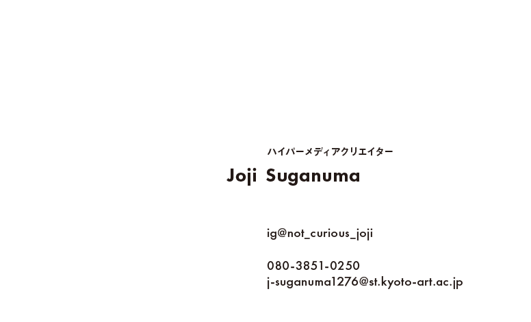
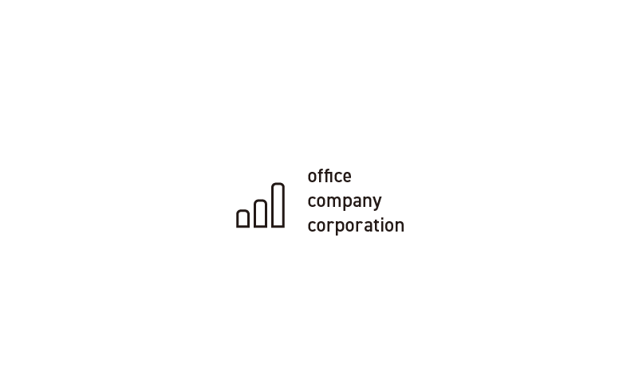
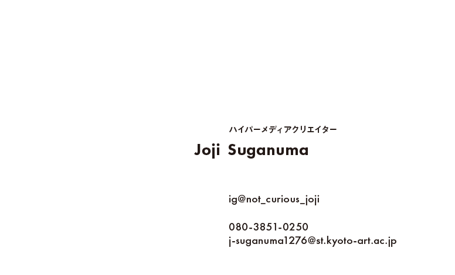
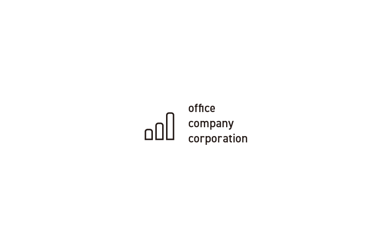

メディアリテラシー基礎
Session:1
課題：名刺のデザインをする
メディアリテラシー基礎の一番最初の制作物は多分これになると思います。

表

裏
センターラインをガイドとしたシンプルな横置きの名刺のデザインをしました。
表面の英文フォントにはFUTURAを使用し、よりカジュアルで若い印象をもたせています。
唯一の和文には見出ゴ
MB31を使用しています。
裏面には企業ロゴとしてふさわしいフォーマルさを感じさせるようにDIN2014を使用しました。
メディアリテラシー基礎の一番最初の制作物は多分これになると思います。

表

裏
センターラインをガイドとしたシンプルな横置きの名刺のデザインをしました。
表面の英文フォントにはFUTURAを使用し、よりカジュアルで若い印象をもたせています。
唯一の和文には見出ゴ
MB31を使用しています。
裏面には企業ロゴとしてふさわしいフォーマルさを感じさせるようにDIN2014を使用しました。